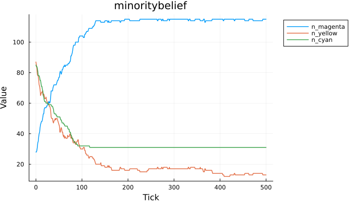
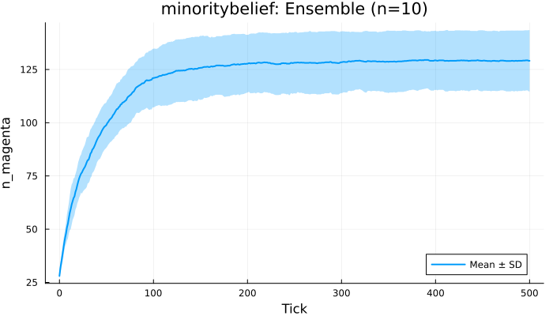
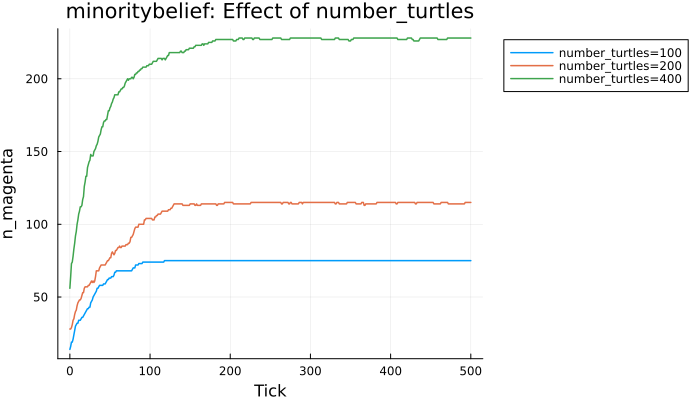

Minority Belief Spread
Overview
WHAT IS IT?
This model tries to explore the spread of a belief from a minority to the majority, through a social network. It is inspired by the article “Minority Rules: Scientists Discover Tipping Point for the Spread of Ideas” at https://news.rpi.edu/luwakkey/2902.
Mainly, it tries to identify the tipping point reprensented by a critical percentage of initial believers, who are people with a new unshakable belief. This percentage have to be around 10% according to the article.
HOW IT WORKS
Every agent holds a belief, some of them have a constant new belief and the others are open to change their opinion. Then each time step (tick), agents will SPEAK and LISTEN to their neighbors, trying to exchange their opinions.
For this, we have the turtles-own property BELIEF to represent their opinion.
- BELIEF = 0 -\> means old opinion -\> color WHITE
- BELIEF = 1 -\> means both of the two points of view -\> color YELLOW
- BELIEF = 2 -\> means new opinion -\> color MAGENTA
Each time step, agents will randomely SPEAK and LISTEN to their neighbors.
There are two kinds of agents :
- CONSTANTS : are those who holds the minority fixed opinion
- OPENS : are those who are able to change their opinion
Interactions are :
SPEAK : the current turtle will try to convince their neighbors (if they are OPENS), to to adopt its opinion, either by incrementing or by decrementing the value of BELIEF.
LISTEN : the current turtle (if it is OPEN) will try the change its own opinion according to its neighbors belief.
The envirnment is a social network, and some of its parameters as the number of nodes and its type are set by the user.
THINGS TO NOTICE
The model can show two types of behavior depending on the initial parameters :
- the minority belief can spread to the majority within a reasonnable time
- the minority will not reach the majority in limited period of time
Also the Small-world network illustrates a tipping point around 10%.
THINGS TO TRY
Try to explore the model with a total number of turtles equal to 200, for percentage like 5% and 14%, using the small-world network.
EXTENDING THE MODEL
The model can be extended to model the co-existence of two types of constant believers, who will try to convince the rest of the population.
CREDITS AND REFERENCES
By Thouraya BCHIR / tbchir@gmail.com
Main ideas are from the article @ https://news.rpi.edu/luwakkey/2902
Parameters
| Parameter | Type | Default | Description |
|---|---|---|---|
number_turtles | Int | 200 | number turtles |
percentage_of_believers | Float64 | 0.14 | percentage of believers |
max_ticks | Int | 500 | max ticks |
Source Code
The Julia code to run this model:
using ArkModelZoo
_, trajectory = run_minoritybelief()Time Series

Ensemble Runs
Ten replicates with different random seeds, showing mean ± standard deviation.

Parameter Sensitivity
Varying number_turtles.

Appendix: Source Code
This model is implemented in the Ark.jl Entity-Component-System (ECS) framework. The code is split into five files, each with a distinct role:
- Parameters: a mutable struct holding all configurable values.
- Components: lightweight data types attached to individual entities (agents).
- Resources: world-level shared state accessible to all systems.
- Systems: functions that operate on entities each tick, defining model behavior.
- Model: wiring that assembles the world, registers resources and systems, and provides the run entry point.
Parameters (parameters.jl)
The parameter struct uses @kwdef so that every field has a default value and can be overridden by keyword. These defaults match the original NetLogo model’s slider settings.
Base.@kwdef mutable struct MBeliefParams
number_turtles::Int = 200
percentage_of_believers::Float64 = 0.14
max_ticks::Int = 500
seed::Int = 42
endComponents (components.jl)
Components are lightweight data types attached to individual entities (agents). Mutable structs hold per-entity state, while empty tag structs act as markers for the ECS query system to efficiently filter entities.
struct MBeliefDummy endResources (resources.jl)
Resources are world-level singletons shared across all systems, used for global state and aggregate statistics.
mutable struct MBeliefState
n_agents::Int
belief::Vector{Int} # 0 (cyan/white), 1 (yellow), 2 (magenta/constant)
is_constant::Vector{Bool}
adj::Vector{Set{Int}}
color::Vector{Int} # 0=cyan, 1=yellow, 2=magenta, 3=white
end
function MBeliefState()
MBeliefState(0, Int[], Bool[], Set{Int}[], Int[])
end
function _mbelief_add_agent!(state::MBeliefState)
state.n_agents += 1
push!(state.belief, 0)
push!(state.is_constant, false)
push!(state.adj, Set{Int}())
push!(state.color, 0) # cyan by default
return state.n_agents
end
mutable struct MBeliefStats
n_magenta::Int
n_yellow::Int
n_cyan::Int
end
MBeliefStats() = MBeliefStats(0, 0, 0)Systems (systems.jl)
Systems contain the model logic and execute in a defined order each tick. Each system struct implements either initialize! (run once at setup) or update! (run every tick).
# --- Helpers ---
# Barabási-Albert preferential attachment graph
function _mbelief_build_ba_network!(rng, state::MBeliefState)
n = state.n_agents
n < 2 && return
# Start: nodes 1 and 2 connected
push!(state.adj[1], 2)
push!(state.adj[2], 1)
degree = zeros(Int, n)
degree[1] = 1
degree[2] = 1
total_degree = 2
for i in 3:n
# Each new node connects to 1 existing node with prob proportional to degree
cumsum = 0
r = rand(rng) * total_degree
target = 1
for j in 1:(i-1)
cumsum += degree[j]
if cumsum >= r
target = j
break
end
end
push!(state.adj[i], target)
push!(state.adj[target], i)
degree[i] += 1
degree[target] += 1
total_degree += 2
end
end
function _mbelief_update_counts!(state::MBeliefState, stats::MBeliefStats)
stats.n_magenta = 0
stats.n_yellow = 0
stats.n_cyan = 0
for i in 1:state.n_agents
c = state.color[i]
if c == 2 # magenta
stats.n_magenta += 1
elseif c == 1 # yellow
stats.n_yellow += 1
elseif c == 0 # cyan
stats.n_cyan += 1
end
# white (3) is not counted by any tracked global
end
end
# Speak behavior for a single agent
function _mbelief_speak!(rng, state::MBeliefState, i::Int)
if state.is_constant[i]
# Constants: ask in-link-neighbors with [breed = opens]
# NetLogo `and` is non-short-circuit, so random-float 1.0 is always consumed
for nb in state.adj[i]
if !state.is_constant[nb]
rval = rand(rng)
if state.belief[nb] != 2 && rval < 0.10
state.belief[nb] += 1
if state.belief[nb] == 2
state.color[nb] = 2 # magenta
elseif state.belief[nb] == 1
state.color[nb] = 1 # yellow
end
end
end
end
else
b = state.belief[i]
if b == 2
# NetLogo: `ask in-link-neighbors with [belief = 1 and belief = 0]`
# belief = 1 AND belief = 0 is IMPOSSIBLE — this never selects anyone.
# So opens with belief 2 do nothing when speaking.
# (consume RNG to match NetLogo's random-float evaluation)
if rand(rng) < 0.04
# No neighbors match the impossible condition
end
elseif b == 0
# NetLogo: `ask in-link-neighbors with [belief = 1 and belief = 2]`
# belief = 1 AND belief = 2 is IMPOSSIBLE — this never selects anyone.
if rand(rng) < 0.04
# No neighbors match the impossible condition
end
end
end
end
# Listen behavior for a single agent
# NetLogo iterates through each neighbor's belief sequentially,
# adjusting the listener's belief for each one.
function _mbelief_listen!(rng, state::MBeliefState, i::Int)
state.is_constant[i] && return
isempty(state.adj[i]) && return
rand(rng) >= 0.04 && return
# NetLogo: let belief_list (list 3)
# Then prepends each neighbor's belief.
# Then iterates: for each x, if x=0 and belief!=0 → belief-1; if x=2 and belief!=2 → belief+1
# The initial 3 in the list never matches x=0 or x=2, so it's a no-op.
# Build belief_list: start with [3], then prepend each neighbor's belief
belief_list = Int[3]
for nb in state.adj[i]
pushfirst!(belief_list, state.belief[nb])
end
for x in belief_list
if x == 0 && state.belief[i] != 0
state.belief[i] -= 1
if state.belief[i] == 0
state.color[i] = 3 # white
elseif state.belief[i] == 1
state.color[i] = 1 # yellow
end
end
if x == 2 && state.belief[i] != 2
state.belief[i] += 1
if state.belief[i] == 2
state.color[i] = 2 # magenta
elseif state.belief[i] == 1
state.color[i] = 1 # yellow
end
end
end
end
# --- Systems ---
struct InitMBeliefSystem <: System end
function initialize!(::InitMBeliefSystem, world::World)
params = get_resource(world, MBeliefParams)
rng = get_resource(world, RNGResource).rng
state = get_resource(world, MBeliefState)
stats = get_resource(world, MBeliefStats)
# Create agents
for _ in 1:params.number_turtles
_mbelief_add_agent!(state)
end
# Build BA network
_mbelief_build_ba_network!(rng, state)
# Assign initial beliefs: random 0 or 1
for i in 1:state.n_agents
state.belief[i] = rand(rng, 0:1)
# NetLogo: color starts cyan, then if belief=1 → yellow
if state.belief[i] == 1
state.color[i] = 1 # yellow
else
state.color[i] = 0 # cyan (belief=0)
end
end
# Assign constants (percentage_of_believers fraction)
n_constants = round(Int, params.percentage_of_believers * params.number_turtles)
const_indices = randperm(rng, state.n_agents)[1:n_constants]
for i in const_indices
state.is_constant[i] = true
state.belief[i] = 2
state.color[i] = 2 # magenta
end
_mbelief_update_counts!(state, stats)
return nothing
end
struct MBeliefGoSystem <: System end
function update!(::MBeliefGoSystem, world::World)
state = get_resource(world, MBeliefState)
stats = get_resource(world, MBeliefStats)
rng = get_resource(world, RNGResource).rng
# NetLogo: ask turtles [...] — shuffled order
order = randperm(rng, state.n_agents)
for i in order
if rand(rng, 0:1) == 1
_mbelief_speak!(rng, state, i)
_mbelief_listen!(rng, state, i)
else
_mbelief_listen!(rng, state, i)
_mbelief_speak!(rng, state, i)
end
end
_mbelief_update_counts!(state, stats)
# Stop if all turtles have color magenta
all_magenta = all(i -> state.color[i] == 2, 1:state.n_agents)
if all_magenta
get_resource(world, Terminate).stop = true
end
return nothing
end
struct MBeliefTerminationSystem <: System end
function update!(::MBeliefTerminationSystem, world::World)
params = get_resource(world, MBeliefParams)
tick = get_resource(world, Tick)
if tick.tick + 1 >= params.max_ticks
get_resource(world, Terminate).stop = true
end
return nothing
endModel (model.jl)
The model file assembles all pieces: it creates the ECS World with the required component types, registers resources, builds the Scheduler with systems in execution order, and exposes the public run entry point. The observer pattern records the trajectory each tick.
function minoritybelief_world(; initial_capacity::Int = 128)
return World(MBeliefDummy; initial_capacity=initial_capacity, allow_mutable=true)
end
function minoritybelief_systems()
return (
InitMBeliefSystem(),
MBeliefGoSystem(),
MBeliefTerminationSystem(),
)
end
function minoritybelief_model(params::MBeliefParams = MBeliefParams())
world = minoritybelief_world()
_add_standard_resources!(world, params)
add_resource!(world, MBeliefState())
add_resource!(world, MBeliefStats())
scheduler = Scheduler(world, minoritybelief_systems())
initialize!(scheduler)
return scheduler
end
struct MBeliefObserver end
function minoritybelief_headers(::MBeliefObserver)
return ["n_magenta", "n_yellow", "n_cyan"]
end
function minoritybelief_values(::MBeliefObserver, world::World)
stats = get_resource(world, MBeliefStats)
return Float64[stats.n_magenta, stats.n_yellow, stats.n_cyan]
end
function run_minoritybelief(; params::MBeliefParams = MBeliefParams(), observe::Bool = true)
return _run_model(minoritybelief_model, MBeliefObserver(), minoritybelief_values; params, observe)
end